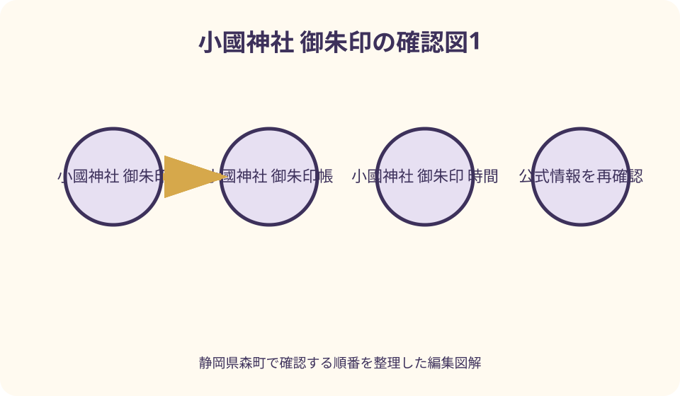
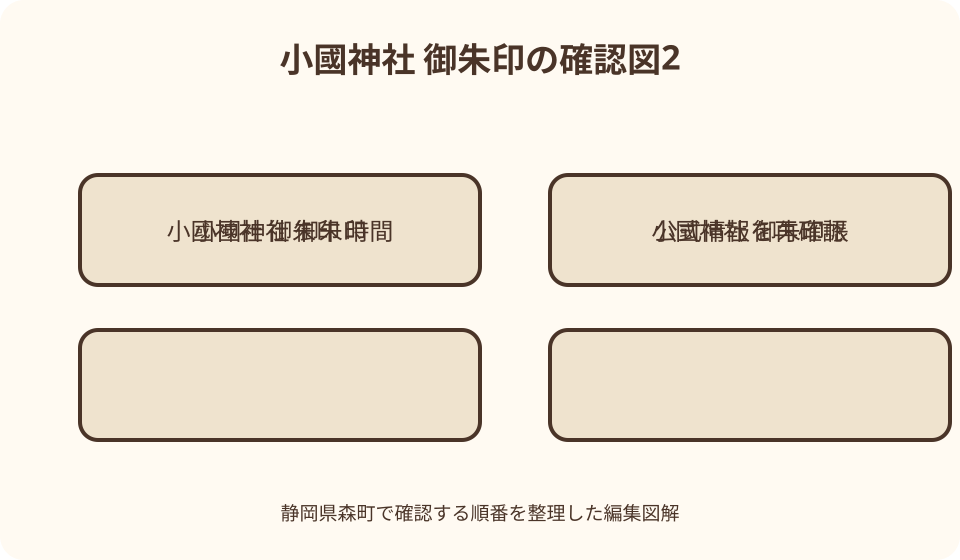

小國神社｜最終確認 2026-08-10
静岡県森町・小國神社の御朱印ガイド｜参拝順、授与所、御朱印帳を確認する
御朱印だけを先に求めるのではなく、一の鳥居、手水、神前での参拝を済ませた後、境内案内にある祈祷受付所及神札授与所などで、その日の御朱印受付場所、時間、書置きか帳面への記入か、初穂料を職員へ確認してください。公式サイトは御朱印の意味や御朱印帳を説明していますが、通常の受付時間や限定御朱印の常時頒布までは保証していません。祭事、初詣、紅葉期は交通と授与所の混雑を見込み、受けられない場合は参拝記録を残して次回へ回します。
御朱印は参拝の記録——到着したら先に社殿へ向かう
小國神社公式は、御朱印を、ご祭神の名前や霊威を表す文字や図象、神社名が記された御印と説明しています。帳面には参拝の日付が墨書されるのが一般的で、お神札と同じく神々のご加護が宿る尊いものと位置付けています。図柄や希少性を集める前に、その日に参拝したことを残すものだと理解することが出発点です。
駐車場やバス停から着いたら、御朱印の列を最初に探すのではなく、境内案内を見て参道と社殿を確認します。小國神社は森町一宮、本宮山の山麓から流れる宮川のほとりに鎮座します。広い神域で迷わないよう、同行者と参拝後の集合場所を決め、手荷物を整えてから進みます。
公式の参拝作法は、手水で手と口を清め、神前で二拝二拍手一拝を行う流れを示しています。混雑時に前の人の動作を急いでまねるより、出発前に公式ページで手順を読んでおく方が落ち着いて参拝できます。手水舎の現地案内や使用方法に変更があれば、その表示を優先してください。
参拝後に御朱印を受けられれば、その日の祈りと境内で過ごした時間を帳面へ残せます。受付が終了していたり、祭事で対応が変わったりしても、参拝そのものが失敗になるわけではありません。御朱印を得ることだけを訪問の成否にせず、社殿で感謝を伝える時間を最初に確保します。
出発前に確認する四項目——日付、祭事、受付、交通
第一に訪問日を決めたら、小國神社公式の『お知らせ』『各種ご案内』『祭典・神事』を確認します。小國神社では一年を通じて多くの祭祀が行われると公式参拝案内にあり、通常日と祭事日では境内の動線や受付対応が同じとは限りません。過去の記事にある日時を今年の予定へ流用しないことが重要です。
第二に、御朱印を受けたい旨を神社へ問い合わせます。公式サイトに掲載される電話は0538-89-7302です。訪問日、到着見込み、通常の御朱印か公式告知を見た特別な頒布か、自分の御朱印帳を持参するかを伝え、受付場所、受付可能な時間、初穂料、書置きの有無を確認します。
第三に、交通を確認します。小國神社公式は新東名の遠州森町スマートICから約7分、森掛川ICから約15分、東名の袋井ICから約20分と案内します。ただし紅葉や正月などは一部区間で交通規制が行われる場合があります。通常時の数字を祭事日の到着時刻として使わず、余裕を設けます。
第四に、帰る時刻を決めます。公共交通では、JR袋井駅または天竜浜名湖鉄道遠州森駅から秋葉バスの小國神社開運線が公式に案内されています。運行日、往路、復路を事業者の最新時刻で確認し、御朱印の列が長くても帰りの便を逃さない終了時刻を同行者と共有してください。
境内の順路——一の鳥居、手水舎、神前、受付確認へ進む
小國神社公式の境内施設ページには、一の鳥居、勅使参道、手水舎、二の鳥居、参集殿、祈祷受付所及神札授与所、新神札授与所、社務所などが順に掲載されています。これは建物の位置と役割を知るための一次情報です。当日の立入や受付場所は変わり得るため、現地の案内板と職員の誘導を優先します。
手水舎は参拝前に心身を清める場所として案内されています。公式作法では、左手、右手、口、再び左手という順序が示されています。混雑時は長く場所を占めず、柄杓の有無や衛生上の案内が通常と違う場合は現場表示へ従います。作法を完璧に見せるより、次の人へ譲る気持ちを持ちます。
神前では姿勢を正し、二回深くおじぎをし、二回拍手して祈り、最後に一回深くおじぎをする二拝二拍手一拝が公式に示されています。願い事だけを並べるのではなく、参拝できたことへの感謝を伝えるという神社公式の説明を意識します。撮影や会話で神前の流れを止めないようにします。
参拝を終えたら、境内案内にある祈祷受付所及神札授与所などで、御朱印をどこで受け付けているかを尋ねます。施設ページは同所を祈祷の受付と、お神札・お守りを授与する場所として説明していますが、御朱印の受付場所を同じだと本文だけから断定はできません。まず職員へ聞くことが確実です。
正月には新神札授与所でお神札やお守りを授与し、参拝者でにぎわうと公式施設ページにあります。通常期に使う窓口が繁忙期も同じとは限りません。『前回はここだった』という記憶で列へ割り込まず、掲示された授与品の種類と最後尾を確認してから並んでください。

受付時間は固定値を書かない——訪問日ごとに神社へ尋ねる
小國神社の公式ページは、御朱印の意味と御朱印帳を紹介していますが、通常の御朱印受付について毎日の開始・終了時刻を明記していません。そのため、この記事では『何時から何時まで』という固定値を掲載しません。検索結果や個人ブログの時刻を、神社が現在保証する時間として扱わないでください。
電話で確認するときは、開門時間だけを尋ねるのでは不十分です。境内へ入れる時間、祈祷受付、神札授与、御朱印受付は、それぞれ同じとは限りません。『御朱印を受けたい』『この日に行く』『何時ごろ着く』と目的を具体的に伝え、受付終了より余裕のある到着時刻を聞きます。
当日は、電話で聞いた時間内でも、祭典、神事、団体参拝、職員対応、混雑によって待ち時間が生じる可能性があります。時間内に到着すれば必ずすぐ受けられるという意味ではありません。帰りのバスや次の予約がある人は、列へ並ぶ前に待ち時間の目安を尋ねます。
受付時間を過ぎた場合、社務所や閉じた窓口へ無理に対応を求めないことです。御朱印は商品在庫の受け取りとは異なります。参拝日を自分の手帳へ記録し、境内の案内や授与所の場所を確認して、次回は余裕のある時間に訪れる準備へ変えます。
御朱印帳を持参するとき、空きページと名前を確認する
自分の御朱印帳を持参する場合は、前夜に空きページを確認します。紙片、写真、しおりを挟んだままにせず、受付で開いて渡せる状態へ整えます。帳面の表裏や書いてほしいページに迷いがある場合は、自分で決めつけず職員へ尋ねます。書き手が扱いやすいよう、袋から出して準備します。
御朱印帳には氏名や連絡の手掛かりを控えめに付け、ほかの参拝者の帳面と取り違えないようにします。個人情報を表へ大きく書く必要はありませんが、自分で識別できる印があると安心です。家族分をまとめて預けられるか、複数冊の受付が可能かは混雑状況もあるため、その場で確認してください。
墨書や印が乾く前にページを閉じると、向かいの紙へ移る場合があります。受け取った後の扱いは職員の案内を聞き、必要なら当て紙を使います。境内を歩きながらページを開いて撮影せず、通行の妨げにならない場所で内容と日付を静かに確認します。
御朱印帳を忘れた場合、書置きが常に用意されていると断定はできません。現地で御朱印帳を受けられるか、書置き対応があるかを尋ねます。希望する形式がなければ、別の帳面や非公式な紙へ押してもらうことを求めず、参拝だけを済ませて次回へ回します。
もみじめぐり御朱印帳は四社寺を巡るための別の選択肢
神社公式は、遠州・三河の小國神社、普門寺、尊永寺、龍潭寺を巡る『一社三山もみじめぐり御朱印帳』を案内しています。表紙はもみじの色の移ろいを表し、屏風型で、各社寺の特徴的な縁起物や社紋・神紋をあしらった押印面を持つと説明されています。通常の御朱印帳と目的を分けて検討します。
2026年8月10日に確認した公式案内では、2024年11月1日から頒布し、頒布場所は四社寺、初穂料は1200円で御朱印代は別と掲載されています。この数字と頒布継続は訪問日まで保証されません。在庫、初穂料、各社寺での受付、巡拝の最新案内を公式サイトまたは各社寺へ確認してください。
この御朱印帳は、小國神社だけで全てを完成させるものではありません。四社寺を参拝・散策し、自然への感謝と各社寺のご神徳を受ける巡拝の旅として公式が紹介しています。一日で急いで回り切る計画にせず、移動距離、開門、受付、天候を調べ、複数日に分ける選択肢も持ちます。
屏風のように立てて祀ることができ、公式は玄関や床の間など粗末にならない場所へ丁寧に祀るよう案内しています。買った時点で目的を終えず、自宅のどこへ置くか、ほかの三山をいつ訪ねるかまで考えます。限定感より、巡拝を続けられるかを選択基準にします。

限定御朱印は告知がある時だけ確認し、常時あると書かない
小國神社公式には、十二段舞楽と十二支を題材にした特別御朱印など、過去または特定期間の案内があります。しかし、一度掲載された案内が現在も同じ条件で続いているとは限りません。検索で見つけた画像や日付の古い記事を根拠に、今日受けられる限定御朱印として紹介しないことが必要です。
特別な頒布を希望する場合は、公式サイトの最新のお知らせで、対象期間、頒布場所、初穂料、数量、帳面への記入か書置きかを確認します。記載がなければ電話で尋ねます。SNS上の受領報告は、その人がその日に受けた事実であり、翌日の頒布を保証するものではありません。
限定の頒布が終了していたとき、代替の図柄を強く求めたり、見本を撮るため窓口を長く占めたりしないようにします。通常の御朱印が受けられるかを確認し、難しければ参拝だけで終えます。受けられなかったことを社寺への不満として拡散する前に、告知の期間と自分の訪問日を見直します。
祭事に合わせた御朱印を目的にする人ほど、祭事そのものの意味と進行を先に読みます。神事中の職員は祭祀や参拝者対応を担っています。御朱印の待ち時間だけを問題にせず、神社が何を守り伝える日なのかを理解し、その日の運営へ従う姿勢を持ちます。
初詣・祭事・繁忙期は、御朱印より帰路と安全を先に確保する
正月は、新神札授与所でお神札やお守りを授与し、参拝者でにぎわうと公式施設案内にあります。駐車場約700台という案内があっても、最寄り区画へすぐ停められる保証ではありません。交通規制、駐車区画、徒歩動線が通常と違う前提で、車内の待ち時間も含めて計画します。
祭事日は、参道や社殿周辺に参列者が集まり、通常の観光日とは目的が異なります。御朱印受付の場所や時間が変わる可能性を神社へ確認し、祭典の進行を横切らないよう現地誘導へ従います。写真撮影や列探しのため、人の流れと逆方向へ歩かないことが安全につながります。
公共交通では、行きの便だけでなく帰りのバスへ確実に乗ることを優先します。列が長い場合、途中で抜ける判断時刻を決めます。乗り遅れても別の便がすぐあるとは限りません。タクシーを代案にする場合も、当日その場で確保できると考えず、配車可能性を事前に調べます。
小さな子ども、高齢者、歩行に不安がある人と訪れる場合は、御朱印待ちを全員へ強いないようにします。公式施設案内には参拝者休憩所が掲載され、暖房設備、机、お手洗いがあると説明されています。利用状況を確認し、待つ人と休む人の集合場所を決めます。
天候が悪い日、日没が近い時間、体調が変わったときは、御朱印を後日に回します。宮川と大樹の杜に囲まれた境内では、路面や気温が町なかと同じとは限りません。受付終了へ急いで転倒するより、参拝を短く終え、安全に戻ることが優先です。
良い点——御朱印を通して参拝、祭事、地域のつながりを学べる
良い点の第一は、御朱印を入口に、ご祭神と神社の由緒を読み直せることです。小國神社の御祭神は大己貴命で、公式参拝案内は人々の良縁を結び育む神として紹介しています。印影だけを記憶するのではなく、誰を祀る神社へ何を感謝しに来たかを言葉にできます。
第二は、境内の施設を順に見る理由が生まれることです。一の鳥居、手水舎、社殿、授与所、休憩所という役割を公式案内で確かめれば、最短距離で窓口だけを往復する訪問では見えない神社の構成が分かります。分からないことを職員へ尋ねる際も、施設名を使って質問できます。
第三は、もみじめぐり御朱印帳のように、一社だけで完結しない地域間の巡拝へ関心を広げられることです。遠州と三河の四社寺が、自然と信仰を通じてつながる企画を公式が示しています。御朱印帳の空欄を急いで埋めるのではなく、各社寺を別の日に丁寧に訪ねるきっかけになります。
第四は、参拝日を家族の記録として残せることです。誰と訪れ、どの祭事や季節に出会い、何を祈ったかを御朱印帳とは別の手帳へ短く書けば、印だけでなくその日の経験が残ります。写真を大量に撮るより、公式案内で知った一つの事実を記す方法もあります。
注文したい点——通常受付の場所と時間を探しやすくしてほしい
注文したい点の第一は、公式サイトで御朱印の意味と御朱印帳は詳しく分かる一方、通常の御朱印を受ける場所、受付時間、初穂料、帳面への記入方法を一画面で確定しにくいことです。訪問日ごとの変更があるとしても、基本情報と『当日はここを確認』という入口があると迷いを減らせます。
第二は、祈祷受付所、神札授与所、新神札授与所、社務所の役割が掲載されていても、御朱印の窓口との関係が本文から明確でないことです。境内図に、通常期、正月、祭事日の問い合わせ先を色分けして示せば、授与品の列へ誤って並ぶ人や、職員へ同じ質問が集中することを減らせます。
第三は、特別御朱印の過去記事が検索に残り、現在の頒布と誤認しやすいことです。終了、継続、在庫終了、次回未定などの状態が記事上部に明示されると、古い告知を見た参拝者が遠方から来て落胆する状況を減らせます。新しい告知だけでなく、古いページの状態表示も重要です。
第四は、公共交通で訪れる人が、御朱印受付と帰りのバスを同時に比較しにくいことです。神社公式のアクセスページからバス情報へ進めますが、繁忙期の臨時運行や交通規制もあります。受付時間を固定表示するだけでなく、交通案内と同日に更新される確認導線が望まれます。
対案・結論——受けられない日は、参拝記録と次回確認を残す
第一の代案は、受付前、受付終了、休止などで御朱印を受けられない場合、参拝日と公式ページを自分の手帳へ記録することです。御朱印帳の空きページへ自分で神社名を装飾したり、非公式な印を押したりせず、正式に受けられる次回まで空けておきます。
第二の代案は、神社公式の授与品ページや境内施設を読み、御朱印以外の学びを一つ持ち帰ることです。ただし、お守りやお神札を御朱印の代用品として衝動的に選ぶのではありません。それぞれの意味と祀り方を確認し、自分に必要な場合だけ授与所で相談します。
第三の代案は、御朱印帳の新規購入を目的にせず、次回の受付場所と時間を職員へ尋ねることです。電話番号、確認日、回答をメモし、神社公式の新しい告知が出たら上書きします。遠方の人は、次回の交通と祭事を同時に調べ、受付終了より十分早い便を選びます。
結論として、正しい順番は『公式告知と交通を確認する、手水と神前参拝を済ませる、当日の受付場所と条件を尋ねる、御朱印帳を丁寧に渡す、受けられなければ次回へ回す』です。限定の有無より、参拝と授与所の案内を尊重することを優先してください。
大石の視点——予定どおり受け取れない余白も参拝に含める
私は、地域の社寺を訪ねる予定では、窓口で何かを受け取ることだけを達成条件にしない方がよいと考えます。祭事、祈祷、混雑、天候によって、職員の対応や動線が変わるのは自然なことです。参拝者側が時間の余白を持てば、受けられない日にも落ち着いて帰れます。
家族で訪れるときは、御朱印を待つ人だけの予定にしないことです。参拝、休憩、帰りのバス、子どもの体調を全員で共有し、列を抜ける時刻を先に決めます。御朱印を希望する人が一人でも、帳面を他人へ任せて別行動するかは受付の案内を聞き、取り違えを防ぎます。
御朱印帳に残る日付は、その日に境内へ足を運んだ事実と結びつきます。だからこそ、限定図柄を得るために参拝を短縮するより、手水、社殿、宮川のほとり、境内の施設を自分の速さで確かめたいところです。帳面を開いたときに、一つの景色や学びを思い出せる参拝が残ります。
受けられなかった日は、次に何を確認すればよいかが分かった日でもあります。受付場所、問い合わせ先、交通、混雑する季節を記録し、次回の準備へ変える。御朱印を巡る行動を消費ではなく、神社と地域を繰り返し訪ねるきっかけにすることが大切だと思います。
まとめ——前日に電話、当日は参拝、帰宅後は丁寧に保管する
前日は、神社公式の最新告知、祭事、交通、駐車場を確認し、必要なら電話で御朱印の受付場所、時間、形式、初穂料を尋ねます。自分の御朱印帳は空きページと識別を確認し、帰りのバスや次の予定から列を離れる時刻も決めます。
当日は、一の鳥居から参道へ進み、手水で清め、神前で二拝二拍手一拝の参拝を済ませます。その後、現地案内に従って御朱印受付を確認します。正月や祭事は通常と異なる窓口を使う可能性があるため、前回の記憶より掲示と職員の説明を優先してください。
帰宅後は、墨や印の状態を確かめ、御朱印帳を粗末にならない場所へ保管します。もみじめぐり御朱印帳を選んだ人は、ほかの三山を急いで回らず、それぞれの公式情報を調べます。受けられなかった人も、参拝日と確認事項を残し、次回へつなげれば十分です。
公式情報・確認先
掲載内容は次の一次情報を基礎に整理しました。営業、料金、催し、交通は変わるため、出発前または手続き前にリンク先で最新情報を確認してください。
- ご参拝の皆様へ（遠江国一宮 小國神社、2026-08-10確認）
- 参拝の作法（遠江国一宮 小國神社、2026-08-10確認）
- 境内の施設等（遠江国一宮 小國神社、2026-08-10確認）
- 福徳授与品（遠江国一宮 小國神社、2026-08-10確認）
- 『もみじめぐり御朱印帳』のご案内（遠江国一宮 小國神社、2026-08-10確認）
- 交通案内（遠江国一宮 小國神社、2026-08-10確認）
- 観光案内・地図（静岡県森町、2026-08-10確認）
- 『遠州の小京都』まちづくりを推進しています（静岡県森町、2026-08-10確認）